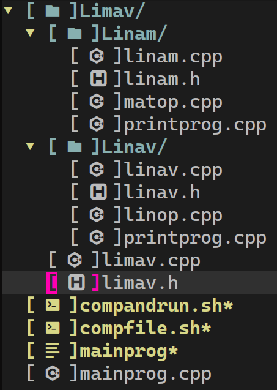
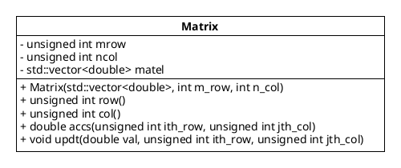

1 Introduction
Vectors and matrix are 2 main mathematical objects that’s being studied in linear algebra. These 2 mathematical objects are useful when it comes to modeling a linear problems, and it has been applied in many fields like physics, computer science, statistics, machine learning, and more. In physics, vectors is something that has direction and value, and matrix can be thought as a map that take a vectors as its input and produce another vectors. In computer science, vectors can be thought as an array, and matrix can be thought as an “array of array”, and in the subject of image processing, matrix is a data structure that can be used to represents an image (Patel, D. and Raman, S., 2019). In statistics, matrix and/or vectors are used in (multi)-linear Poisson regression (Shimosaka, M. et al., 2018). In machine learning, matrix and vectors are main data structure to model the data, especially in support vector machine algorithms (Sheykhmousa, M. et al., 2020). In evolutionary computation, matrix and vectors are primary data structure in Covariance Matrix Adaptation Evolution Strategies (CMA-ES) by (Hansen, N. 2023), for which Hamano, R. et al. used this algorithms to solve mixed-integer black-box optimization problem (Hamano, R. et al., 2022).
\(\quad\) Due to the vast application of matrix and vectors, we try to develope our own C++ header that capable to do a numerical computation of matrix and vectors in linear algebra. We use C++ as our programming language since C++ has incredible speed in execution of a program. This speed is an advantage when we attempt to solving hard optimization problem.
\(\quad\) There are 2 reasons to develope our own C++ header. First, even though there are already software out there that can do a numerical computation of matrix and vectors (e.g., GNU Octave, matlab, julia, etc), it’s a good practice to develope our own C++ header, at least once in a lifetime. Second, when we tried to implement the algorithm of numerical computation of matrix (e.g. LU, QR, or Cholensky factorization) by using higher level programming language like GNU Octave or matlab, why would we try to compute it manually (by write a function) when these programming language already provide a function that we need. Thereby, by develope our own C++ header, we are able to construct vectors and matrix together with its own basic operations. So, when we trying to implement the numerical computation of vectors and matrix, we can do it on our own C++ header, and we use theoritical results and another programming language to check either our own C++ header give the correct results or not. Moreover, if we want to do various applications of matrix and vectors, instead of using someone’s else library, we can use our own C++ header as a form of our intellectual satisfaction.
\(\quad\) The name of our C++ header is limav.h which is stand for vectors and matrix in linear algbera. We use the words “in linear algebra” to tell the honourable reader that almost all of functions that we had programmed in limav.h are based on mathematical maps and its mathematical objects’s properties.
\(\quad\) The rest of this paper is organized as follows. In section 2, we discuss the theory and computation of matrix and vectors, its map, definition, and what kind of data structure that we need. In section 3, we discuss about the class diagram of matrix, Limav’s directory, and error handling. In section 4, we test our C++ header and compare it to the theoritical reuslts, and we provide the table of summary of matrix and vectors computation. Finally, we conclude our discussion in section 5.
2 Theory and Computation
With regards to the theory and computation of vectors in linear algebra, we refer to Linav: Computation of Vectors in Linear Algebra in section 2. Since we had discussed the theory and computation for vectors, in this article, we discuss the theory and computation for matrix. The definitions that we are presented here based on our reference on linear algebra book by (Körner, T.W., 2012) and numerical computation book by (Solomon, J., 2015), except the definition of the pseudomatrix. We start our discussion by the following definition.
Definition 1 (matrix) A \(m\times n\) matrix \(A\) having a real numbers as its entries is defined as the following array
\[ A_{m\times n}\coloneqq\left(\begin{array}{cccc} a_{11} & a_{12} & \cdots & a_{1n}\\ a_{21} & a_{22} & \cdots & a_{2n}\\ \vdots & \vdots & \ddots & \vdots\\ a_{m1} & a_{m2} & \cdots & a_{mn} \end{array}\right)_{m\times n} \tag{1}\]
where \(a_{ij}\in\mathbb{R}\) for \(i=1,2,\ldots,m\) and \(j=1,2,\ldots,n\). We have \(a_{ij}\) is called entry/element of the matrix.
Notation. The following is shortened notation for the entries of a matrix
\[ \left(a_{ij}\right)\coloneqq\left(\begin{array}{cccc} a_{11} & a_{12} & \cdots & a_{1n}\\ a_{21} & a_{22} & \cdots & a_{2n}\\ \vdots & \vdots & \ddots & \vdots\\ a_{m1} & a_{m2} & \cdots & a_{mn} \end{array}\right) \tag{2}\]
Thereby, we may write \(A_{m\times n}\) matrix as \(A_{m\times n}=\left(a_{ij}\right)\).
Definition 2 (Olievera, L. 2022) The set of \(m\times n\) matrix is denoted as \(\mathscr{M}_{m\times n}(\mathbb{R})\) and it is defined as follows
\[ \mathscr{M}_{m\times n}(\mathbb{R})\coloneqq\left\{ A_{m\times n}=\left(a_{ij}\right)\Big|a_{ij}\in\mathbb{R},i=1,2,\ldots,m\text{ and }j=1,2,\ldots,n\right\} \tag{3}\]
Remark 1. From Definition 2, the set of row matrix is defined as \(\mathscr{M}_{1\times n}(\mathbb{R})\) and the set of column matrix is defined as \(\mathscr{M}_{n\times1}(\mathbb{R})\). For the set of square matrix, we simplify the notation into
\[ \mathscr{M}_{n}(\mathbb{R})\coloneqq\mathscr{M}_{n\times n}(\mathbb{R}) \tag{4}\]
2.1 Unary and Binary Operator on Matrix
For the unary operators on matrix, we only consider the transpose and the trace for a matrix. For the binary operators on matrix, we have addition, substraction, multiplication by a real numbers, and multiplication of a matrix.
Definition 3 (matrix transpose) Let \(A=\left(a_{ij}\right)\) and \(A\in\mathscr{M}_{m\times n}(\mathbb{R})\), then transpose of a matrix is a map
\[ t(\cdot)\colon \mathscr{M}_{m\times n}(\mathbb{R})\to\mathscr{M}_{n\times m}(\mathbb{R}) \] \[ \text{s.t. } A\mapsto t(A)\coloneqq(a_{ji}) \tag{5}\]
Remark 2. The common notation for a transpose of a matrix \(A\in\mathscr{M}_{m\times n}(\mathbb{R})\) is \(A^{\top}\in\mathscr{M}_{n\times m}(\mathbb{R})\) so that \(\left(a_{ij}\right)^{\top}=\left(a_{ji}\right)\)
Example 1 If \(A\in\mathscr{M}_{2\times3}(\mathbb{R})\) such that
\[ A=\left(\begin{array}{ccc} a_{11} & a_{12} & a_{13}\\ a_{21} & a_{22} & a_{23} \end{array}\right) \]
then
\[ A^{\top} =\left(\begin{array}{ccc} a_{11} & a_{12} & a_{13}\\ a_{21} & a_{22} & a_{23} \end{array}\right)^{\top} =\left(\begin{array}{cc} a_{11} & a_{21}\\ a_{12} & a_{22}\\ a_{13} & a_{23} \end{array}\right) \]
thereby, we have that \(A^{\top}\in\mathscr{M}_{3\times2}(\mathbb{R})\).
Definition 4 (trace of matrix) Let \(A=\left(a_{ij}\right)\), then the trace of a matrix is a function \(\text{tr}(\cdot)\colon\mathscr{M}_{m\times n}(\mathbb{R})\to\mathbb{R}\) s.t.
\[ A\mapsto\text{tr}(A)\coloneqq\sum_{i=1}^{t}a_{ii} \tag{6}\]
where \(t=\min(m,n)\).
Remark 3. Due to numerical issue, we compute the \(\text{tr}(A)\) by using the Kahan’s sum algorithm.
Example 2 Suppose that \(A\in\mathscr{M}_{3}(\mathbb{R})\) s.t.
\[ A=\left(\begin{array}{ccc} a_{11} & a_{12} & a_{13}\\ a_{21} & a_{22} & a_{23}\\ a_{31} & a_{32} & a_{33} \end{array}\right) \]
then
\[ \begin{align} \text{tr}(A)&\coloneqq\sum_{i=1}^{3}a_{ii}\\ \text{tr}(A)&=a_{11}+a_{22}+a_{33} \end{align} \]
Definition 5 (matrix addition) Let \(A,B,C\in\mathscr{M}_{m\times n}(\mathbb{R})\) where \(A=\left(a_{ij}\right)\) and \(B=\left(b_{ij}\right)\), then the addition of 2 matrix is a map \(+\colon\mathscr{M}_{m\times n}(\mathbb{R})\times\mathscr{M}_{m\times n}(\mathbb{R})\to\mathscr{M}_{m\times n}(\mathbb{R})\) s.t.
\[ (A,B)\mapsto C\coloneqq A+B \tag{7}\]
where \(C=\left(c_{ij}\right)\) and \(c_{ij}=a_{ij}+b_{ij}\).
Definition 6 (matrix substraction) Let \(A,B,C\in\mathscr{M}_{m\times n}(\mathbb{R})\) where \(A=\left(a_{ij}\right)\) and \(B=\left(b_{ij}\right)\), then the substraction of 2 matrix is a map \(-\colon\mathscr{M}_{m\times n}(\mathbb{R})\times\mathscr{M}_{m\times n}(\mathbb{R})\to\mathscr{M}_{m\times n}(\mathbb{R})\) s.t.
\[ (A,B)\mapsto C\coloneqq A-B \tag{8}\]
where \(C=\left(c_{ij}\right)\) and \(c_{ij}=a_{ij}-b_{ij}\).
Definition 7 (scaled matrix) Let \(\lambda\in\mathbb{R}\) and \(A,B\in\mathscr{M}_{m\times n}(\mathbb{R})\). If \(A=\left(a_{ij}\right)\), then such a matrix can be scaled by \(\lambda\) by using the following maps, \(\cdot\colon\mathbb{R}\times\mathscr{M}_{m\times n}(\mathbb{R})\to\mathscr{M}_{m\times n}(\mathbb{R})\) s.t.
\[ (\lambda,A)\mapsto B\coloneqq\lambda A \tag{9}\]
where \(B=\left(b_{ij}\right)\) and \(b_{ij}=\lambda a_{ij}\)
Example 3 Let \(\lambda\in\mathbb{R}\) and \(A,B,C\in\mathscr{M}_{2\times3}(\mathbb{R})\). If
\[ A=\left(\begin{array}{ccc} a_{11} & a_{12} & a_{13}\\ a_{21} & a_{22} & a_{23} \end{array}\right)\text{ and }B=\left(\begin{array}{ccc} b_{11} & b_{12} & b_{13}\\ b_{21} & b_{22} & b_{23} \end{array}\right) \]
then
\((i)\) If \(C=A+B\), then
\[ \begin{align} C &=\left(\begin{array}{ccc} a_{11} & a_{12} & a_{13}\\ a_{21} & a_{22} & a_{23} \end{array}\right)+\left(\begin{array}{ccc} b_{11} & b_{12} & b_{13}\\ b_{21} & b_{22} & b_{23} \end{array}\right) \\ C &=\left(\begin{array}{ccc} a_{11}+b_{11} & a_{12}+b_{12} & a_{13}+b_{13}\\ a_{21}+b_{21} & a_{22}+b_{22} & a_{23}+b_{23} \end{array}\right) \end{align} \]
\((ii)\) If \(C=A-B\), then
\[ \begin{align} C &=\left(\begin{array}{ccc} a_{11} & a_{12} & a_{13}\\ a_{21} & a_{22} & a_{23} \end{array}\right)-\left(\begin{array}{ccc} b_{11} & b_{12} & b_{13}\\ b_{21} & b_{22} & b_{23} \end{array}\right) \\ C &=\left(\begin{array}{ccc} a_{11}-b_{11} & a_{12}-b_{12} & a_{13}-b_{13}\\ a_{21}-b_{21} & a_{22}-b_{22} & a_{23}-b_{23} \end{array}\right) \end{align} \]
\((iii)\) If \(C=\lambda A\), then
\[ \begin{align} C &=\lambda\left(\begin{array}{ccc} a_{11} & a_{12} & a_{13}\\ a_{21} & a_{22} & a_{23} \end{array}\right) \\ C &=\left(\begin{array}{ccc} \lambda a_{11} & \lambda a_{12} & \lambda a_{13}\\ \lambda a_{21} & \lambda a_{22} & \lambda a_{23} \end{array}\right) \end{align} \]
Definition 8 (multiplication of matrix and vector) Suppose that \((\mathbb{R}^{n},+,\cdot)\) and \((\mathbb{R}^{m},+,\cdot)\) are 2 vector spaces, let \(\vec{x}\in\mathbb{R}^{n}\) and \(\vec{y}\in\mathbb{R}^{m}\), then the multiplication of matrix and vector is defined through function \(\cdot\colon\mathscr{M}_{m\times n}(\mathbb{R})\times\mathbb{R}^{n}\to\mathbb{R}^{m}\) s.t.
\[ (A,\vec{x})\mapsto\vec{y}\coloneqq A\vec{x} \tag{10}\]
Suppose that \(A=\left(a_{ij}\right)\) and \(\vec{x}=(x_{1},x_{2},\ldots,x_{n})\), if \(A\vec{x}=\vec{y}\) then \(\vec{y}=(y_{1},y_{2},\ldots,y_{m})\) s.t.
\[ y_{i}=\sum_{j=1}^{n}a_{ij}x_{j} \tag{11}\]
Definition 9 (matrix multiplication) Let \(A\in\mathscr{M}_{m\times t}(\mathbb{R}),B\in\mathscr{M}_{t\times n}(\mathbb{R})\), and \(C\in\mathscr{M}_{m\times n}(\mathbb{R})\), if \(A=\left(a_{ij}\right)\) and \(B=\left(b_{ij}\right)\), then the multiplication of a matrix is a function \(\cdot\colon\mathscr{M}_{m\times t}(\mathbb{R})\times\mathscr{M}_{t\times n}(\mathbb{R})\to\mathscr{M}_{m\times n}(\mathbb{R})\) s.t.
\[ (A,B)\mapsto C\coloneqq AB \tag{12}\]
where \(C=\left(c_{ij}\right)\) and
\[ c_{ij}=\sum_{k=1}^{t}a_{ik}b_{kj} \tag{13}\]
Remark 4. Two matrix \(A\) and \(B\), only can be multiplied if
\[ \#\text{col}(A)=\#\text{row}(B) \tag{14}\]
where \(\#\text{col}(A)\) is the number of column of \(A\) matrix and \(\#\text{row}(B)\) is the number of row of \(B\) matrix. If \(C=AB\), then \(\#\text{row}(C)=\#\text{row}(A)\) and \(\#\text{col}(C)=\#\text{col}(B)\).
Definition 10 Let \(A\in\mathscr{M}_{m\times n}(\mathbb{R})\) s.t. \(A=\left(a_{ij}\right)\), then the following operator \(\textit{row}(i;A)\) return the elements of \(A\) matrix at the \(i\)th-row as a vector, i.e.,
\[ A=\left(a_{ij}\right)\mapsto\textit{row}(i;A)\coloneqq(a_{i1},a_{i2},\ldots,a_{in}) \tag{15}\]
and \(\textit{col}(A;j)\) return the entries of matrix \(A\) at the \(j\)th-column as a vector, i.e.,
\[ A=\left(a_{ij}\right)\mapsto\textit{col}(j;A)\coloneqq(a_{1j},a_{2j},\ldots,a_{mj}) \tag{16}\]
\(\quad\) Theoritically, the computation of 2 matrix is defined in Equation 13. Due to numerical issue, we do not compute 2 matrix \(A\) and \(B\) as it is, instead, we compute it by the virtue of inner product \(\langle\cdot,\cdot\rangle\colon\mathbb{R}^{n}\times\mathbb{R}^{n}\to\mathbb{R}\) s.t. if \(\vec{x}=(x_{1},x_{2},\ldots,x_{n})\) and \(\vec{y}=(y_{1},y_{2},\ldots,y_{n})\) then
\[ \langle\vec{x},\vec{y}\rangle\coloneqq\sum_{i=1}^{n}x_{i}y_{i} \tag{17}\]
and again, due to numerical issue, we compute the inner product of 2 vectors by using the following equation
\[ \langle\vec{x},\vec{y}\rangle\coloneqq\lambda\mu\left\langle \frac{1}{\lambda}\vec{x},\frac{1}{\mu}\vec{y}\right\rangle \tag{18}\]
where \(\lambda,\mu\in\mathbb{R}\), and with regards to the summation, we compute it by using the Kahan’s sum algorithm (Solomon, J., 2015). The following passage is description how we compute the multiplication of 2 matrix.
\(\quad\) Let \(A\in\mathscr{M}_{m\times t}(\mathbb{R}),B\in\mathscr{M}_{t\times n}(\mathbb{R})\), and \(C\in\mathscr{M}_{m\times n}(\mathbb{R})\). If \(A=\left(a_{ij}\right)\) and \(B=\left(b_{ij}\right)\), then
\[ (A,B)\mapsto C\coloneqq AB \]
where \(C=\left(c_{ij}\right)\) and \(c_{ij}\coloneqq\langle\vec{x}_{i},\vec{y}_{j}\rangle\) for \(\vec{x}_{i},\vec{y}_{j}\in\mathbb{R}^{t}\) s.t. \(\vec{x}_{i}\coloneqq\textit{row}(i;A)\) and \(\vec{y}_{j}\coloneqq\textit{col}(j;B)\). In order to handle the numerical issue, the computation of the inner product is computed by using Equation 18 by choosing \(\lambda_{i},\mu_{j}\in\mathbb{R}\) s.t.
\[ \begin{align} \lambda_{i} &\coloneqq\max\left\{ \vert a_{i1}\vert,\vert a_{i2}\vert,\ldots,\vert a_{it}\vert\bigg|\vec{x}_{i}=(a_{i1},a_{i2},\ldots,a_{it})\right\} \\ \mu_{j} &\coloneqq\max\left\{ \vert b_{1j}\vert,\vert b_{2j}\vert,\ldots,\vert b_{tj}\vert\bigg|\vec{y}_{j}=(b_{1j},b_{2j},\ldots,b_{tj})\right\} \end{align} \]
in other words, \(\lambda_{i}\) and \(\mu_{j}\) are the maximum of the absolute value of \(\vec{x}_{i}\) and \(\vec{y}_{j}\), respectively. If it is happaned to be \(\lambda_{i}=0\) or \(\mu_{j}=0\), then replace \(\lambda_{i}=\varepsilon\) or \(\mu_{j}=\varepsilon\) for \(0<\varepsilon\ll1\) to avoid division by \(0\). The following is algorithm for the computation of 2 matrix
\begin{algorithm}
\caption{Multiplication of 2 matrix}
\begin{algorithmic}
\STATE Define $A\in\mathscr{M}_{m\times t}(\mathbb{R})$ s.t. $A=\left(a_{ij}\right)$
\STATE Define $B\in\mathscr{M}_{t\times n}(\mathbb{R})$ s.t. $B=\left(b_{ij}\right)$
\STATE let $C\in\mathscr{M}_{m\times n}(\mathbb{R})$ s.t. $C=\left(c_{ij}\right)\qquad$ // We may think $c_{ij}=0$ initially.
\FOR{$i\longleftarrow 1,2,\ldots,\#\textit{row}(A)$}
\For{$j\longleftarrow 1,2,\ldots,\#\textit{col}(B)$}
\STATE let $\vec{x}\longleftarrow\textit{row}(i;A)\qquad$ // $\vec{x}=(a_{i1},a_{i2},\ldots,a_{it})$
\STATE let $\vec{y}\longleftarrow\textit{col}(j;B)\qquad$ // $\vec{y}=(b_{1j},b_{2j},\ldots,b_{tj})$
\STATE $c_{ij}\longleftarrow\langle\vec{x},\vec{y}\rangle\qquad$ // the inner product is computed by using Equation 18
\ENDFOR
\ENDFOR
\RETURN{$C$}
\end{algorithmic}
\end{algorithm}
Example 4 Let \(A,B,C\in \mathscr{M}_3(\mathbb{R})\). If
\[ A= \left(\begin{array}{ccc} a_{11} & a_{12} & a_{13}\\ a_{21} & a_{22} & a_{23}\\ a_{31} & a_{32} & a_{33} \end{array}\right) \]
and
\[ B=\left(\begin{array}{ccc} b_{11} & b_{12} & b_{13}\\ b_{21} & b_{22} & b_{23}\\ b_{31} & b_{32} & b_{33} \end{array}\right) \]
then the multiplication of \(C=AB\) as follows. Let \(\vec{x}_{i},\vec{y}_{i}\in\mathbb{R}^{3}\) s.t. \(\vec{x}_{i}\coloneqq\textit{row}(i;A)\) and \(\vec{y}_{j}\coloneqq\textit{col}(j;B)\), then we may write \(A\) and \(B\) matrix as follows
\[ A=\left(\begin{array}{ccc} \longleftarrow & \vec{x}_{1} & \longrightarrow \\ \longleftarrow & \vec{x}_{2} & \longrightarrow \\ \longleftarrow & \vec{x}_{3} & \longrightarrow \end{array}\right) \]
and
\[ B=\left(\begin{array}{ccc} \Big\uparrow & \Big\uparrow & \Big\uparrow\\ \vec{y}_{1} & \vec{y}_{2} & \vec{y}_{3}\\ \Big\downarrow & \Big\downarrow & \Big\downarrow \end{array}\right) \]
then for \(C=AB\) we have that \(C=\left(c_{ij}\right)\) s.t.
\[ C=\left(\begin{array}{ccc} \langle\vec{x}_{1},\vec{y}_{1}\rangle & \langle\vec{x}_{1},\vec{y}_{2}\rangle & \langle\vec{x}_{1},\vec{y}_{3}\rangle\\ \langle\vec{x}_{2},\vec{y}_{1}\rangle & \langle\vec{x}_{2},\vec{y}_{2}\rangle & \langle\vec{x}_{2},\vec{y}_{3}\rangle\\ \langle\vec{x}_{3},\vec{y}_{1}\rangle & \langle\vec{x}_{3},\vec{y}_{2}\rangle & \langle\vec{x}_{3},\vec{y}_{3}\rangle \end{array}\right) \]
2.2 Pseudomatrix
One of common mistake when study computer science is happened to be when someone want to create/model a \(A\in\mathscr{M}_{m\times n}(\mathbb{R})\) by using a programming language. And that mistake is thinking that \(A\in\mathscr{M}_{m\times n}(\mathbb{R})\) is an array of an array, or more precisely, \(A\in\mathscr{M}_{m\times n}(\mathbb{R})\) is an array of size \(m\) where each elements is an array of size \(n\).
\(\quad\) For example, in C++ programming language, thinking that \(A\in\mathscr{M}_{m\times n}(\mathbb{R})\) can be modeled as follows is a mistake
std::vector<std::vector<double>> superevil = {{1.0, 2.0},{3.0,4.0}};
double the_evil = superevil.at(0).at(1);even though that it works, nevertheless, it’s not good to do such a things, and there is a good reason for prohibited to do such a things. One of such a reasons for prohibit to thinking \(A\in\mathscr{M}_{m\times n}(\mathbb{R})\) is an array of an array is it’s like to have a 1 box where inside such a box there are \(m\) boxes, and for each \(m\) boxes there are \(n\) items. Of course, if someone is delivering an items to someone else in such a way, then one may think that why don’t we just have a box that can be filled by \(mn\) items. Therefore, in order to handle this ‘evil’, pseudomatrix is a good data structure to model a \(m\times n\) matrix.
\(\quad\) Pseudomatrix is a (non primitive) data structure to model \(A\in\mathscr{M}_{m\times n}(\mathbb{R})\). Pseudomatrix is a vector for which such a vector is treated as if it is a matrix. The following is definition of pseudomatrix.
Definition 11 (pseudomatrix) Let \(A\in\mathscr{M}_{m\times n}(\mathbb{R})\), a pseudomatrix is a vector \(\vec{x}\in\mathbb{R}^{t}\) where \(t=mn\) s.t.
\[ A=\left(a_{ij}\right)\Leftrightarrow\vec{x}=(a_{11},a_{12},\ldots,a_{1n},a_{21},a_{22},\ldots,a_{2n},\ldots,a_{m1},a_{m2},\ldots,a_{mn}) \tag{19}\]
Since pseudomatrix is a vector, then each elements of such a vector only can be indexed by a number, not a pair of numbers. Hence, we need a function \(f\colon\mathbb{N}\times\mathbb{N}\to\mathbb{N}\) so that
\[ \begin{align} A=\left(a_{ij}\right) &\Leftrightarrow\vec{x}=(a_{f(1,1)},a_{f(1,2)},\ldots,a_{f(1,n)},\ldots,a_{f(m,1)},a_{f(m,2)},\ldots,a_{f(m,n)})\\ &\Leftrightarrow\vec{x}=(x_{1},x_{2},\ldots,x_{t}) \end{align} \]
due to \(\vec{x}\in\mathbb{R}^{t}\) and \(t=mn\). Such a function is written in the following theorem
Theorem 1 Let \(A\in\mathscr{M}_{m\times n}(\mathbb{R}),\vec{x}\in\mathbb{R}^{t}\), and \(t=mn\). If \(A=\left(a_{ij}\right)\) and its pseudomatrix is a vector \(\vec{x}=(x_{1},x_{2},\ldots,x_{t})\), then
\[ a_{ij}=x_{f(i,j)} \]
where \(f\colon\mathbb{N}\times\mathbb{N}\to\mathbb{N}\) s.t.
\[ (i,j)\mapsto f(i,j)\coloneqq(i-1)n+j \tag{20}\]
for \(1\leq f(i,j)\leq t\), \(i=1,2,\ldots,m\), and \(j=1,2,\ldots,n\).
Proof. Let \(A\in\mathscr{M}_{m\times n}(\mathbb{R})\) and \(\vec{x}\in\mathbb{R}^{n},t=mn\). By definition, let the pseudomatrix of \(A\) is a vector \(\vec{x}\) s.t.
\[ \begin{align} A=\left(a_{ij}\right) &\Leftrightarrow\vec{x}=(a_{11},a_{12},\ldots,a_{1n},a_{21},a_{22},\ldots,a_{2n},\ldots,a_{m1},\ldots,a_{mn})\\ &\Leftrightarrow\vec{x}=(x_{f(1,1)},x_{f(1,2)},\ldots,x_{f(1,n)},x_{f(2,1)},\ldots,x_{f(2,n)},\ldots,x_{f(m,1)},\ldots,x_{f(m,n)})\\ &\Leftrightarrow\vec{x}=(x_{1},x_{2},\ldots,x_{t}) \end{align} \tag{21}\]
so for \(a_{ij}\) in matrix \(A\), we have a corresponding element \(x_{f(i,j)}\) in \(\vec{x}\) s.t.
\[ a_{ij}=x_{f(i,j)} \]
the definition of \(f\colon\mathbb{N}\times\mathbb{N}\to\mathbb{N}\) s.t. \((i,j)\mapsto f(i,j)\) is defined through induction of every \(i=1,2,\ldots,m\) and \(j=1,2,\ldots,n\) as follows. From Equation 21 line one and two, we may rearrange the pseudomatrix as a row and column to form a matrix, hence we have the following equality of a matrix
\[ \left(\begin{array}{cccc} a_{11} & a_{12} & \cdots & a_{1n}\\ a_{21} & a_{22} & \cdots & a_{2n}\\ a_{31} & a_{32} & \cdots & a_{3n}\\ \vdots & \vdots & \ddots & \vdots\\ a_{m1} & a_{m2} & \cdots & a_{mn} \end{array}\right)=\left(\begin{array}{cccc} x_{f(1,1)} & x_{f(1,2)} & \cdots & x_{f(1,n)}\\ x_{f(2,1)} & x_{f(2,2)} & \cdots & x_{f(2,n)}\\ x_{f(3,1)} & x_{f(3,2)} & \cdots & x_{f(3,n)}\\ \vdots & \vdots & \ddots & \vdots\\ x_{f(m,1)} & x_{f(m,2)} & \cdots & x_{f(m,n)} \end{array}\right) \]
since we are interested in the index of the elements of a matrix, we simplify the notation of the matrix equality above by only look at the subscript, thus
\[ \left(\begin{array}{cccc} (1,1) & (1,2) & \cdots & (1,n)\\ (2,1) & (2,2) & \cdots & (2,n)\\ (3,1) & (3,2) & \cdots & (3,n)\\ \vdots & \vdots & \ddots & \vdots\\ (m,1) & (m,2) & \cdots & (m,n) \end{array}\right)=\left(\begin{array}{cccc} f(1,1) & f(1,2) & \cdots & f(1,n)\\ f(2,1) & f(2,2) & \cdots & f(2,n)\\ f(3,1) & f(3,2) & \cdots & f(3,n)\\ \vdots & \vdots & \ddots & \vdots\\ f(m,1) & f(m,2) & \cdots & f(m,n) \end{array}\right) \]
through Equation 21 line two and three we have the equation for \(f(i,j)\) by rearrange the elements of the pseudomatrix \(\vec{x}\) as a row and column to form a matrix and looking at its subscript, hence we have the following equality of a matrix
\[ \left(\begin{array}{cccc} f(1,1) & f(1,2) & \cdots & f(1,n)\\ f(2,1) & f(2,2) & \cdots & f(2,n)\\ f(3,1) & f(3,2) & \cdots & f(3,n)\\ \vdots & \vdots & \ddots & \vdots\\ f(m,1) & f(m,2) & \cdots & f(m,n) \end{array}\right)=\left(\begin{array}{cccc} 1 & 2 & \cdots & n\\ n+1 & n+2 & \cdots & n+n=2n\\ 2n+1 & 2n+2 & \cdots & 2n+n=3n\\ \vdots & \vdots & \ddots & \vdots\\ (m-1)n+1 & (m-1)n+2 & \cdots & (m-1)n+n=mn \end{array}\right) \]
if \(i\coloneqq m\) and \(j\coloneqq n\), then from the equality of a matrix above, we see that
\[ \begin{align} f(m,n) &=(m-1)n+n\\ \Leftrightarrow f(i,j) &=(i-1)n+j \end{align} \]
and \(1\leq f(i,j)\leq t\) since \(t=mn\). Therefore, the pseudomatrix of \(A\) is a vector \(\vec{x}\) s.t.
\[ A=\left(a_{ij}\right)\Leftrightarrow\vec{x}=\left(\begin{array}{ccc} \longleftarrow & x_{f(i,j)} & \longrightarrow\end{array}\right) \]
where \(f\colon\mathbb{N}\times\mathbb{N}\to\mathbb{N}\) s.t. \((i,j)\mapsto f(i,j)\coloneqq(i-1)n+j\), for which the following equality
\[ a_{ij}=x_{f(i,j)}=x_{(i-1)n+j} \]
is obtained thereof.
\(\square\)
Remark 5. The equality \(a_{ij}=x_{f(i,j)}\) where \(f\colon\mathbb{N}\times\mathbb{N}\to\mathbb{N}\) s.t.
\[ (i,j)\mapsto(i-1)n+j \]
is true if we start counting from \(1\). If we start counting from \(0\), i.e., \(i=0,1,\ldots,m-1\) and \(j=0,1,\ldots,n-1\), then we have that if \(A=(a_{ij})\) and its pseudomatrix is vector \(\vec{x}=(x_{0},x_{1},\ldots,x_{t})\) and \(t=mn-1\), then
\[ a_{ij} = x_{f(i,j)} \]
where \(f\colon \mathbb{N}\times\mathbb{N}\to\mathbb{N}\) s.t.
\[ (i,j)\mapsto f(i,j)\coloneqq in+j \tag{22}\]
and \(0\leq f(i,j)\leq t\). In this case, \(t=mn-1\) since we start counting from \(0\). And the proof is similar to the proof of theorem [thm: idx_pseudomat].
Example 5 Let \(A\in\mathscr{M}_{2\times 3}(\mathbb{R})\) s.t.
\[ A=\left(\begin{array}{ccc} a_{11} & a_{12} & a_{13}\\ a_{21} & a_{22} & a_{23} \end{array}\right) \]
then the pseudomatrix of \(A\) is a vector \(\vec{x}\in\mathbb{R}^t\) for \(t=mn=2\times 3=6\)
\[ \vec{x}=(a_{11},a_{12},a_{13},a_{21},a_{22},a_{23}) \]
Example 6 If \(A\in\mathscr{M}_3(\mathbb{R})\) s.t.
\[ A= \left(\begin{array}{ccc} a_{11} & a_{12} & a_{13}\\ a_{21} & a_{22} & a_{23}\\ a_{31} & a_{32} & a_{33} \end{array}\right) \]
then the pseudomatrix of \(A\) is a vector \(\vec{x}\in\mathbb{R}^{t}\) for \(t=mn=3\times3=9\) and \(\vec{x}=(x_{f(1,1)},x_{f(1,2)},\ldots,x_{f(3,3)})\). Since we start counting from \(1\), then \(f(i,j)\coloneqq(i-1)n+j\). Thus,
\[ \begin{align} f(1,1) &=(1-1)3+1=0\times3+1=0+1=1\Rightarrow x_{1}=a_{11}\\ f(1,2) &=(1-1)3+2=0\times3+2=0+2=2\Rightarrow x_{2}=a_{12}\\ f(1,3) &=(1-1)3+3=0\times3+3=0+3=3\Rightarrow x_{3}=a_{13}\\ f(2,1) &=(2-1)3+1=1\times3+1=3+1=4\Rightarrow x_{4}=a_{21}\\ f(2,2) &=(2-1)3+2=1\times3+2=3+2=5\Rightarrow x_{5}=a_{22}\\ f(2,3) &=(2-1)3+3=1\times3+3=3+3=6\Rightarrow x_{6}=a_{23}\\ f(3,1) &=(3-1)3+1=2\times3+1=6+1=7\Rightarrow x_{7}=a_{31}\\ f(3,2) &=(3-1)3+2=2\times3+2=6+2=8\Rightarrow x_{8}=a_{32}\\ f(3,3) &=(3-1)3+3=2\times3+3=6+3=9\Rightarrow x_{9}=a_{33} \end{align} \]
thereby, the pseudomatrix of A is a vector \(\vec{x}=(x_{1},x_{2},\ldots,x_{9})\) s.t.
\[ \vec{x}=(a_{11},a_{12},a_{13},a_{21},a_{22},a_{23},a_{31},a_{32},a_{33}) \]
Example 7 Suppose that \(A\in\mathscr{M}_2\) s.t.
\[ A = \left(\begin{array}{cc} a_{00} & a_{01} \\ a_{10} & a_{11} \end{array}\right) \]
then the pseudomatrix of \(A\) is a vector \(\vec{x}\in\mathbb{R}^{t}\) where \(t=2\times2=4\) and \(\vec{x}=(x_{f(0,0)},x_{f(0,1)},x_{f(1,0)},x_{f(1,1)})\). Since we start counting from \(0\), then \(f(i,j)=in+j\). Thus
\[ \begin{align} f(0,0) &=0\times2+0=0+0=0\Rightarrow x_{0}=a_{00}\\ f(0,1) &=0\times2+1=0+1=1\Rightarrow x_{1}=a_{01}\\ f(1,0) &=1\times2+0=2+0=2\Rightarrow x_{2}=a_{10}\\ f(1,1) &=1\times2+1=2+1=3\Rightarrow x_{3}=a_{11} \end{align} \]
thereby, the pseudomatrix of \(A\) is a vector \(\vec{x}=(x_{0,}x_{1},x_{2},x_{3})\) s.t. \(\vec{x}=(a_{00},a_{01},a_{10},a_{11})\).
3 Design and Implementation
Before we start implementing the abstract concept of mathematics into a real programming language like C++, it’s better to visualize the structure of the directory and the structure of Matrix class. To do so, we use one of diagram of Unified Modelling Language (UML) by (Fowler, M., 2004), a class diagram to visualize Matrix class.
\(\quad\) The following is the structure of Limav directory (see Figure 1). Our Limav directory consist 2 type of file, either .h files or .cpp files. All classes, functions, and operators are declared in .h file, and how we program these class, functions, and operators are in .cpp files.

Figure 1: Structure of directory of linear_algebra which consist of Limav's directory, mainprog.cpp, compfile.sh, and compandrun.sh.
\(\quad\) The limav.h header actually consist of 2 main header files, those are linav.h and linam.h. We have linav.h header for computation of vectors in linear algebra only, and we had explained it in detail in the following article by title Linav: Computation of Vectors in Linear Algebra. For linam.h, it’s a C++ header and it’s stand for matrix in linear algebra, and it’s intended to be used for computation of matrix only. And limav.h header involves linav.h and linam.h through the following operators, multiplication of matrix and vector, multiplication of 2 matrix, and transpose of a vector. In applied perspective, we add 3 more operators, those operators are \(\textit{row}(\cdot;A),\textit{col}(\cdot;A)\) and \(\textit{tr}(A)\) where \(A\) is a \(m\times n\) matrix. The description of all .h and .cpp files in Limav’s directory is presented in Table 1.
\(\quad\) Figure 2 shows a class diagram for Matrix class. Since we implement this class diagram into C++ programming language, then what we do have from Figure 2 is that Matrix class consist of 3 data members, 1 parameterized constructor, and 4 function members (notice that we use “members” terminology instead of properties and methods, to tell the honourable reader that we implement it in C++ programming language). The description of members of Matrix class is presented in Table 2, and Table 3 is description of operator with regards to matrix only (no vector is involve).
Figure 2: A class diagram for Matrix
| Directory | File | Description | |
| Limav/ | Linam/ | linam.cpp |
computation of all members of Matrix class |
linam.h |
declaration of matrix class and operators | ||
matop.cpp |
computation of operators which have declared in linam.h |
||
printprog.cpp |
program how we print the results | ||
| Linav/ | linav.cpp |
computation of all members of Vector class |
|
linav.h |
declaration of Vector class and operators |
||
linop.cpp |
computation of operators which have declared in linav.h |
||
printprog.cpp |
program how we print the results | ||
limav.cpp |
computation of operators which have declared in limav.h |
||
limav.h |
declaration of operators which involve linav.h and linam.h |
||
| Access Specifier | Member | Description |
private |
mrow |
the number of row that matrix have |
ncol |
the number of column of matrix | |
matel |
the elements (entries) of the matrix | |
public |
Matrix(std::vector<double>, int m_row, int n_col) |
constructor to construct a m_row $\times$ n_col matrix object |
row() |
return the number of row | |
col() |
return the number of column | |
accs(unsigned int ith_row, unsigned int jth_col, |
return the element of matrix at $i$th-row and $j$th-column | |
updt(double val, unsigned int ith_row, unsigned int jth_col) |
update the element of a matrix at $i$th-row and $j$th-column by new value |
| Name | Return | Description |
t(anum::Matrix) |
anum::Matrix |
return the transpose of a matrix |
operator +(anum::Matrix A, anum::Matrix B) |
anum::Matrix |
addition for 2 matrix |
operator -(anum::Matrix A, anum::Matrix B) |
anum::Matrix |
substraction for 2 matrix |
operator *(double sc, anum::Matrix A) |
anum::Matrix |
scaled matrix by real number sc |
Meanwhile, in limav.h, we have the following functions which involve linam.h and linav.h (see Table 4).
| Name | Return | Description |
get_rowel(anum::Matrix, unsigned int ith_row) |
anum::Vector |
get the entries of matrix at $i$th-row |
get_colel(anum::Matrix, unsigned int jth_col |
anum::Vector |
get the entries of matrix at $j$th-column |
operator *(anum::Matrix, anum::Matrix) |
anum::Matrix |
multiplication of 2 matrix |
operator *(anum::Matrix, anum::Vector) |
anum::Vector |
multiplication of matrix and vector |
t(anum::Vector) |
anum::Matrix |
transpose of a vector |
trace(anum::Matrix) |
double |
the sum of diagonal elements of a matrix |
\(\quad\) When it comes to implement the mathematical concept into C++ programming language, we use try-catch and throw technique to evaluate if such an operation can be done or not (Stroustrup, B., 2001). For example, 2 matrix can only be added if and only if they have the same number of row and column. The elements of a matrix or vector can be accessed if and only if the given index is within in a range. And, 2 matrix, say \(A\) and \(B\), \(A\) can only be multiplied by \(B\) if and only if \(\#\textit{col}(A)=\#\textit{row}(B)\), etc.
\(\quad\) Some of function members or constructors are equipped by try-catch and/or throw, and some of them are not (see Table 5). And, for some of functions members or constructor which equipped with try-catch and throw are immidietly terminate the program if some error are catched due to the program will give undesired results if it’s not terminated. Nevertheless, some of constructor do not terminated the program if some error is catched due to we are capable to handle such an error, and that constructor is anum::Matrix
\(\quad\) For anum::Matrix(std::vector<double>, unsigned int m_row, unsigned int n_col), based on the number of the entries, there are 4 cases that we need to handle. Let \(\vec{x}=(x_{1},x_{2},\ldots,x_{t})\) is a point in \(\mathbb{R}^{t}\) where \(x_{1},x_{2},\ldots,x_{t}\) are the entries of a \(\vec{v}\) (pseudo) matrix, if \(m\coloneqq\) m_row and \(n\coloneqq\) n_col then
\[ \begin{array}{ccccccc} \left(\begin{array}{cc} x_{1} & x_{2}\\ x_{3} & x_{4}\\ x_{5} & x_{6} \end{array}\right) & & \left(\begin{array}{cc} x_{1} & x_{2}\\ x_{3} & x_{4}\\ \xcancel{x}_{5} & \xcancel{x}_{6} \end{array}\right) & \underrightarrow{\quad\textit{become}\quad} & \left(\begin{array}{cc} x_{1} & x_{2}\\ x_{3} & x_{4} \end{array}\right) & & \left(\begin{array}{ccc} x_{1} & x_{2} & x_{3}\\ x_{4} & x_{5} & x_{6}\\ 0 & 0 & 0 \end{array}\right)\\ \textit{case 1} & & & \textit{case 2} & & & \textit{case 3} \end{array} \]
Figure 3: 3 cases when construct a pseudomatrix \(\) where its entries is a point in \(\mathbb{R}^t\) for \(t=6\) such that \(\vec{x}=(x_{1}, x_{2}, x_{3}, x_{4}, x_{5}, x_{6})\). In \(\textit{case 1}\), we have \(t=mn\) or \(6=3\times 2\). In \(\textit{case 2}\), we have that \(t>mn\) or \(6>2\times 2\), thereby \(x_{5}\) and \(x_{6}\) are ignored. In \(\textit{case 3}\), we have \(t<mn\) or \(6 < 3\times 3\), thereby we have \(mn-t\) or \(3\times 3 - 6 = 9 - 3= 3\) “slots” are left, we fill these “empty slots” by \(0\).
\(1.\) If \(t=mn\), then no error will be catched, and we have \(\vec{v}\) is the pseudomatrix. E.g., see \(\textit{case 1}\) in Figure \(3\).
\(2.\) If \(t>mn\), then std::domain_error& doerr will be throwed and catched. We could handle this error in the catch block code by returning the pseudomatrix \(\vec{v}\) s.t. \(\forall i\leq mn,i=1,2,\ldots,t; x_{i}\) is included in \(\vec{v}\), and \(\forall i>mn,i=mn+1,mn+2,\ldots,t; x_{i}\) in \(\vec{x}\) is ignored so that \(x_{i}\) is not in \(\vec{v}\). E.g., see \(\textit{case 2}\) in Figure 3.
\(3\). If \(t<mn\), then std::domain_error& doerr will be throwed and catched. This error could be handled in the catch block code by \(\forall i\leq mn,i=1,2,\ldots,mn; x_{i}\) is included in pseudomatrix \(\vec{v}\), and we include \(0\) in pseudomatrix \(\vec{v}, mn-t\) times. E.g., see \(\textit{case 3}\) in Figure 3.
\(4.\) Otherwise, std::exception& e will be catched, and the program will be terminated, immidietly.
| No. | function/constructor/function members | Catch | Condition to throw | |
| 1. | Vector() |
- | - | |
| 2. | Vector(unsigned int dimension) |
- | - | |
| 3. | Vector(std::vector<double>) |
- | - | |
| 4. | double accs(unsigned int ith_position) |
const std::out_of_range& oor |
- | |
| 5. | void updt(unsigned int ith_position, double) |
const std::out_of_range& oor |
||
| 6. | unsigned int get_dim() |
- | - | |
| 7. | anum::Vector operator +(anum::Vector lhs, anum::Vector rhs) |
const std::domain_error& doerr |
if (lhs.get_dim()!=rhs.get_dim()) { throw std::domain_error("..."); } |
|
| 8. | anum::Vector operator -(anum::Vector lhs, anum::Vector rhs) |
const std::domain_error& doerr |
if (lhs.get_dim()!=rhs.get_dim()) { throw std::domain_error("..."); } |
|
| 9. | anum::Vector operator (anum::Vector lhs, anum::Vector rhs) |
const std::domain_error& doerr |
if (lhs.get_dim()!=rhs.get_dim()) { throw std::domain_error("..."); } |
|
| 10. | anum::Vector operator *(double, anum::Vector) |
- | - | |
| 11. | anum::Vector operator *(anum::Vector, double) |
- | - | |
| 12. | anum::Vector abs(anum::Vector) |
- | - | |
| 13. | double sum(anum::Vector) |
- | - | |
| 14. | anum::Vector power(anum::Vector, double) |
- | - | |
| 15. | double lpnorm(anum::Vector, double) |
- | - | |
| 16. | double eunorm(anum::Vector) |
- | - | |
| 17. | double inpro(anum::Vector, anum::Vector) |
const std::domain_error& doerr |
if (u.get_dim()!=v.get_dim()) { throw std::domain_error("..."); } |
|
| 18. | double distance(anum::Vector, anum::Vector) |
- | - | |
| 19. | anum::Vector normalize(anum::Vector) |
- | - | |
| 20. | Matrix(std::vector<double>, unsigned int m_row, unsigned int n_col) |
std::domain_error& doerr |
if (vec.size() != m_row * n_col) { throw std::domain_error("..."); } |
|
const std::exception &e |
||||
| 21. | unsigned int row() |
- | - | |
| 22. | unsigned int col() |
- | - | |
| 23. | double accs(unsigned int ith_row, unsigned int jth_col) |
const std::out_of_range& oor |
if (ith_row > (this->mrow-1)) { const std::string oor_log = "..."; throw std::out_of_range(oor_log); } |
|
const std::exception& e |
||||
| 24. | double updt(double val, unsigned int ith_row, unsigned int jth_col) |
const std::out_of_range &oor |
if (ith_row > (this->m_row-1)){ const std::string oor_log = "..."; throw std::out_of_range(oor_log); } |
|
const std::exception& e |
||||
| 25. | anum::Matrix t(anum::Matrix) |
- | - | |
| 26. | anum::Matrix operator +(anum::Matrix A, anum::Matrix B) |
const std::domain_error& doerr |
if ((A.row()!=B.row()) || (A.col() != B.col())) { throw std::domain_error("..."); } |
|
const std::exception& e |
||||
| 27. | anum::Matrix operator - (anum::Matrix A, anum::Matrix B) |
const std::domain_error& doerr |
if ((A.row() != B.row()) || (A.col() != B.col())) { throw std::domain_error("..."); } |
|
| 28. | anum::Matrix operator *(double sc, anum::Matrix) |
- | - | |
| 29. | anum::Vector get_rowel(anum::Matrix, unsigned int ith_row) |
- | - | |
| 30. | anum::Vector get_colel(anum::Matrix, unsigned jth_col) |
- | - | |
| 31 | anum::Matrix operator *(anum::Matrix, anum::Vector) |
const std::domain_error &doerr |
if (A.col() != B.row()) { throw std::domain_error("..."); } |
|
| 32. | anum::Vector operator *(anum::Matrix, anum::Vector) |
const std::domain_error &doerr |
if (mat.col()!=vec.get_dim()) { throw std::domain_error("..."); }) |
|
| 33. | anum::Matrix t(anum::Vector) |
- | - | |
| 34. | double trace(anum::Matrix) |
- | - |
\(\quad\) We suggest for those who want to use limav.h, to create a new folder having your purpose as the name of this new folder. In this new folder consist of our Limav’s directory and mainprog.cpp. For example, in my case, linear_algebra is the name of my new folder. In this new folder consist our Limav’s directory and mainprog.cpp. Since we use Fedora Linux as our operating system, we create 2 bash script, compfile.sh and compandrun.sh. For compfile.sh it’s a script for compile the program, and it’s written as follows
#!/bin/bash
echo "g++ Limav/Linav/linav.h Limav/Linav/linav.cpp Limav/Linav/linop.cpp Limav/Linav/printprog.cpp Limav/Linam/linam.h Limav/Linam/linam.cpp Limav/Linam/matop.cpp Limav/Linam/printprog.cpp Limav/limav.h Limav/limav.cpp mainprog.cpp -o mainprog -O2 --time";
g++ Limav/Linav/linav.h Limav/Linav/linav.cpp Limav/Linav/linop.cpp Limav/Linav/printprog.cpp Limav/Linam/linam.h Limav/Linam/linam.cpp Limav/Linam/matop.cpp Limav/Linam/printprog.cpp Limav/limav.h Limav/limav.cpp mainprog.cpp -o mainprog -O2 --time;compandrun.sh is a bash script to compile and then execute (run) the program, the script is written as follows
#!/bin/bash
echo "g++ Limav/Linav/linav.h Limav/Linav/linav.cpp Limav/Linav/linop.cpp Limav/Linav/printprog.cpp Limav/Linam/linam.h Limav/Linam/linam.cpp Limav/Linam/matop.cpp Limav/Linam/printprog.cpp Limav/limav.h Limav/limav.cpp mainprog.cpp -o mainprog -O2";
g++ Limav/Linav/linav.h Limav/Linav/linav.cpp Limav/Linav/linop.cpp Limav/Linav/printprog.cpp Limav/Linam/linam.h Limav/Linam/linam.cpp Limav/Linam/matop.cpp Limav/Linam/printprog.cpp Limav/limav.h Limav/limav.cpp mainprog.cpp -o mainprog -O2;
./mainprog;4 Results and Discussion
Suppose that \(A,B\in\mathscr{M}_{3}(\mathbb{R}),\vec{x},\vec{y}\in\mathbb{R}^{3}\) s.t.
\[ A=\left(\begin{array}{ccc} 1 & 2 & 3 \\ 4 & 5 & 6 \\ 7 & 8 & 9 \end{array}\right) \]
and \(\vec{x}=(2,3,5)\), let \(\lambda=3\), then theoritically we have
\((i)\) if \(B\coloneqq A+A\), then
\[ \begin{align} A+A&=\left(\begin{array}{ccc} 1 & 2 & 3\\ 4 & 5 & 6\\ 7 & 8 & 9 \end{array}\right)+\left(\begin{array}{ccc} 1 & 2 & 3\\ 4 & 5 & 6\\ 7 & 8 & 9 \end{array}\right)\\ &=\left(\begin{array}{ccc} 1+1 & 2+2 & 3+3\\ 4+4 & 5+5 & 6+6\\ 7+7 & 8+8 & 9+9 \end{array}\right)\\&=\left(\begin{array}{ccc} 2 & 4 & 6\\ 8 & 10 & 12\\ 14 & 16 & 18 \end{array}\right) \\ A+A&=2A \end{align} \]
\((ii)\) if \(\vec{y}\coloneqq A\vec{x}\), then
\[ \begin{align} A\vec{x}&=\left(\begin{array}{ccc} 1 & 2 & 3\\ 4 & 5 & 6\\ 7 & 8 & 9 \end{array}\right)\left(\begin{array}{c} 2\\ 3\\ 5 \end{array}\right)\\ &=\left(\begin{array}{c} y_{1}\\ y_{2}\\ y_{3} \end{array}\right)\\ A\vec{x} &=\vec{y} \end{align} \]
where
\[ \begin{align} y_{1} &=1\times2+2\times3+3\times5=2+6+15=8+15=23\\ y_{2} &=4\times2+5\times3+6\times5=8+15+30=23+30=53\\ y_{3} &=7\times2+8\times3+9\times5=14+24+45=38+45=83 \end{align} \]
thereby, we have that \(\vec{y}=(23,53,83)\).
\((iii)\) if \(\vec{y}\coloneqq\vec{x}+A\vec{x}\), then
\[ \begin{align} \vec{y}&=\left(\begin{array}{c} 2\\ 3\\ 5 \end{array}\right)+\left(\begin{array}{ccc} 1 & 2 & 3\\ 4 & 5 & 6\\ 7 & 8 & 9 \end{array}\right)\left(\begin{array}{c} 2\\ 3\\ 5 \end{array}\right)\\ &=\left(\begin{array}{c} 2\\ 3\\ 5 \end{array}\right)+\left(\begin{array}{c} 23\\ 53\\ 83 \end{array}\right)\\ &=\left(\begin{array}{c} 2+23\\ 3+53\\ 5+83 \end{array}\right)\\ \vec{y}&=\left(\begin{array}{c} 25\\ 56\\ 88 \end{array}\right) \end{align} \]
thus, \(\vec{y}=(25,56,88)\).
\((iv)\) if \(B\coloneqq A2A\), then
\[ B=\left(\begin{array}{ccc} 1 & 2 & 3\\ 4 & 5 & 6\\ 7 & 8 & 9 \end{array}\right)\left(\begin{array}{ccc} 2 & 4 & 6\\ 8 & 10 & 12\\ 14 & 16 & 18 \end{array}\right) \]
Let \(\vec{x}_{1}=(1,2,3);\vec{x}_{2}=(4,5,6);\vec{x}_{3}=(7,8,9)\); and \(\vec{y}_{1}=(2,8,14);\vec{y}_{2}=(4,10,16);\vec{y}_{3}=(6,12,18)\), then we may write B matrix as follows
\[ \begin{align} B &=\left(\begin{array}{ccc} \longleftarrow & \vec{x}_{1} & \longrightarrow\\ \longleftarrow & \vec{x}_{2} & \longrightarrow\\ \longleftarrow & \vec{x}_{3} & \longrightarrow \end{array}\right)\left(\begin{array}{ccc} \Big\uparrow & \Big\uparrow & \Big\uparrow\\ \vec{y}_{1} & \vec{y}_{2} & \vec{y}_{3}\\ \Big\downarrow & \Big\downarrow & \Big\downarrow \end{array}\right)\\ B &=\left(\begin{array}{ccc} \langle\vec{x}_{1},\vec{y}_{1}\rangle & \langle\vec{x}_{1},\vec{y}_{2}\rangle & \langle\vec{x}_{1},\vec{y}_{3}\rangle\\ \langle\vec{x}_{2},\vec{y}_{1}\rangle & \langle\vec{x}_{2},\vec{y}_{2}\rangle & \langle\vec{x}_{2},\vec{y}_{3}\rangle\\ \langle\vec{x}_{3},\vec{y}_{1}\rangle & \langle\vec{x}_{3},\vec{y}_{2}\rangle & \langle\vec{x}_{3},\vec{y}_{3}\rangle \end{array}\right) \end{align} \]
by compute their inner product, we have
\[ \begin{align} \langle\vec{x}_{1},\vec{y}_{1}\rangle &=1\times2+2\times8+3\times14=2+16+42=18+42=60\\ \langle\vec{x}_{1},\vec{y}_{2}\rangle &=1\times4+2\times10+3\times16=4+20+48=24+48=72\\ \langle\vec{x}_{1},\vec{y}_{3}\rangle &=1\times6+2\times12+3\times18=6+24+54=30+54=84\\ \langle\vec{x}_{2},\vec{y}_{1}\rangle &=4\times2+5\times8+6\times14=8+40+84=48+84=132\\ \langle\vec{x}_{2},\vec{y}_{2}\rangle &=4\times4+5\times10+6\times16=16+50+96=66+96=162\\ \langle\vec{x}_{2},\vec{y}_{3}\rangle &=4\times6+5\times12+6\times18=24+60+108=84+108=192\\ \langle\vec{x}_{3},\vec{y}_{1}\rangle &=7\times2+8\times8+9\times14=14+64+126=78+126=204\\ \langle\vec{x}_{3},\vec{y}_{2}\rangle &=7\times4+8\times10+9\times16=28+80+144=108+144=252\\ \langle\vec{x}_{3},\vec{y}_{3}\rangle &=7\times6+8\times12+9\times18=42+96+162=138+162=300 \end{align} \]
thereby, we have \(B\) matrix is
\[ B=A2A=\left(\begin{array}{ccc} 60 & 72 & 84\\ 132 & 162 & 192\\ 204 & 252 & 300 \end{array}\right) \]
\((v)\) if \(B\coloneqq\lambda A=3A\), then
\[ \begin{align} B&=3\left(\begin{array}{ccc} 1 & 2 & 3\\ 4 & 5 & 6\\ 7 & 8 & 9 \end{array}\right)\\ &=\left(\begin{array}{ccc} 3\times1 & 3\times2 & 3\times3\\ 3\times4 & 3\times5 & 3\times6\\ 3\times7 & 3\times8 & 3\times9 \end{array}\right)\\ B &=\left(\begin{array}{ccc} 3 & 6 & 9\\ 12 & 15 & 18\\ 21 & 24 & 27 \end{array}\right) \end{align} \]
Having these theoritical results, now we compute it by using limav.h. We use the theoritical results to justify either our computation using limav.h is effective (return the correct answer) or not. The following is the body of the main code.
#include "Limav/limav.h"
using namespace anum;
using namespace std;
int main(void) {
const Matrix A (vector<double> {
1.0, 2.0, 3.0,
4.0, 5.0, 6.0,
7.0, 8.0, 9.0
}, 3, 3);
const Vector x (vector<double> {2.0, 3.0, 5.0});
const Matrix AaddA = A + A;
const Vector y = A * x;
const Vector y2 = x + (A * x);
const Matrix B = A * (2 * A);
const Matrix Bis3A = 3 * A;
println("A + A = ", AaddA);
println("\ny = Ax = ", y);
println("\nx + Ax = ", y2);
println("\nA2A = ", B);
println("\n3A = ", Bis3A);
}Figure 4: What's written in mainprog.cpp
by compile and run this program we have the following output
A + A =
2 4 6
8 10 12
14 16 18
y = Ax = (23, 53, 83)
x + Ax = (25, 56, 88)
A2A =
60 72 84
132 162 192
204 252 300
3A =
3 6 9
12 15 18
21 24 27
Figure 5: Output of the mainprog.cpp program
As we can see, the results given by is the same as the theoritical results. Thereby, we conclude that give the correct results.
The summary of computation of matrix and vectors is presented in Table 8.
Table 1: Summary of computation
| No. | Operator | Computation | Code |
|---|---|---|---|
| 1 | transpose | $\left(a_{ij}\right)^{\top}=\left(a_{ji}\right)$ | t(A) |
| 2 | matrix addition | $\left(a_{ij}\right)+\left(b_{ij}\right)=\left(a_{ij}+b_{ij}\right)$ | A + B |
| 3 | matrix substraction | $\left(a_{ij}\right)-\left(b_{ij}\right)=\left(a_{ij}-b_{ij}\right)$ | A - B |
| 4 | scaled matrix | $\lambda\left(a_{ij}\right)=\left(\lambda a_{ij}\right)$ | sc * A |
| 5 | matrix multiplication | $\left(a_{ij}\right)\left(b_{ij}\right)=\left(c_{ij}\right)$ | A * B |
| 6 | multiplication of matrix and vector | $\left(a_{ij}\right)\left(x_{j}\right)=\left(y_{i}\right)$ | A * x |
| 7 | transpose of a vector | $\left(\begin{array}{c} x_{1}\\ x_{2}\\ \vdots\\ x_{n} \end{array}\right)^{\top}=\left(x_{1}\,x_{2}\,\cdots\,x_{n}\right)$ | t(x) |
| 8 | trace of matrix | $\textit{tr}\left(a_{ij}\right)={\displaystyle \sum_{i=1}^{\min(m,n)}a_{ii}}$ | trace(A) |
5 Conclusion
A C++ header that we have been developing, limav.h, capable to do computation of vectors and matrix in linear algebra. Even though there are many C++ header can do the same thing, it’s a good practice to develope our own C++ hedaer at least once in a lifetime. There are things that need to be improve such as we think it’s better to use an array instead of std::vector<double> since the number of entries of vectors and matrix are fixed. Moreover, in computation of matrix point of view, limav.h does not provide a function to compute the determinant, inverse, diagonalisation of a matrix, yet. However, the initial motive of the development of limav.h is to construct and compute the mathematical object, and those mathematical objects are vectors and matrices.
And after all this, we have achieved one of our goals, that is to develope and having our own C++ header for numerical computation of matrices and vectors. Thereby, we can do computation and various applications of vectors and matrices by using our own C++ header. Inshallah, as the time goes by, limav.h is improving to be a better and worthy C++ header (library).
6 Acknowledgements
The Author is thanked to the honourable reader who dedicate some of his/her time to reading this paper.
7 References
| Fowler, M. | (2004) UML Distilled: A Brief Guide to the Standard Object Modeling Language. 3rd edn. New York: Addison-Wesley |
| Hamano, R., Saito, S., Nomura, M., & Shirakawa, S. | (2022) “CMA-ES with margin: lower-bounding marginal probability for mixed-integer black-box optimization”. Proceedings of the Genetic and Evolutionary Computation Conference. |
| Dadhley, R. | (2019) 'Notes on THE WE-HERAEUS International Winter School on Gravity and Light'. Available at: https://richie291.wixsite.com/theoreticalphysics/post/the-we-heraeus-international-winter-school-on-gravity-and-light (Accessed: 7 February 2024). |
| Hansen, Nikolaus. | “The CMA Evolution Strategy: A Tutorial”. arXiv:1604.00772. Available at: https://doi.org/10.48550/arXiv.1604.00772 |
| Körner, T.W. | (2012) Vectors, Pure and Applied: A General Introduction to Linear Algebra. Cambridge: Cambridge University Press. |
| Oliveira, L. | (2022). Linear Algebra (1st edn). Chapman and Hall/CRC. Available at: https://doi.org/10.1201/9781351243452 |
| Patel, D. and Raman, S. | (2019) "Accelerated seam carving for image retargeting". IET Image Processing, 13: 885-895. Available: https://doi.org/10.1049/iet-ipr.2018.5283 |
| Sheykhmousa, M., Mahdianpari, M., Ghanbari, H., Mohammadimanesh, F., Ghamisi, P., & Homayouni, S. | (2020) "Support Vector Machine Versus Random Forest for Remote Sensing Image Classification: A Meta-Analysis and Systematic Review". IEEE Journal of Selected Topics in Applied Earth Observations and Remote Sensing, 13, 6308-6325. |
| Shimosaka, M., Tsukiji, T., Wada, H., & Tsubouchi, K. | (2018) "Predictive population behavior analysis from multiple contexts with multilinear poisson regression". Proceedings of the 26th ACM SIGSPATIAL International Conference on Advances in Geographic Information Systems SIGSPATIAL ’18. Available at: https://doi.org/10.1145/3274895.3274964 |
| Solomon, J. | (2015) Numerical Algorithms: Methods for Computer Vision, Machine Learning, and Graphics. USA: A. K. Peters, Ltd. |
| Stroustrup, B. | (2001) 'Exception Safety: Concepts and Techniques', in Deny, C., Knudsen, J.L., Romanovsky, A. and Tripathi, A. (eds), Advances in Exception Handling Techniques. Springer Verlag Lectures Notes in Computer Science. Available at: https://www.stroustrup.com/except.pdf |
Limav: Computation of Matrix and Vectors in Linear Algebra © 2024 by Muhammad Reza Fahlevi is licensed under
Attribution-NonCommercial-ShareAlike 4.0 International


Cite this article
Fahlevi, M.R. (2024) 'Limav: Computation of Matrix and Vectors in Linear Algebra'. Available at: https://www.fahlevisia.com/paper/2024/fsr2/ (Accessed: ).
Fahlevi, M.R. (2024, April 7) Limav: Computation of Matrix and Vectors in Linear Algebra. Fahlevisia. Retrieved , from https://www.fahlevisia.com/paper/2024/fsr2/
Fahlevi, M.R. "Limav: Computation of Matrix and Vectors in Linear Algebra." Accessed . https://www.fahlevisia.com/paper/2024/fsr2/
M.R. Fahlevi. "Limav: Computation of Matrix and Vectors in Linear Algebra." Fahlevisia, Apr. 7, 2024. Accessed: . [Online]. Available: https://www.fahlevisia.com/paper/2024/fsr2/
Fahlevi, Muhammad Reza, Limav: Computation of Matrix and Vectors in Linear Algebra (2024) <https://www.fahlevisia.com/paper/2024/fsr2/> [accessed ]
Muhammad Reza Fahlevi. "Limav: Computation of Matrix and Vectors in Linear Algebra". Fahlevisia, 7 April 2024, https://www.fahlevisia.com/paper/2024/fsr2/
Muhammad Reza Fahlevi, 'Limav: Computation of Matrix and Vectors in Linear Algebra' (Fahlevisia, 7 April 2024) <https://www.fahlevisia.com/paper/2024/fsr2/> accessed .
Fahlevi MR. Limav: Computation of Matrix and Vectors in Linear Algebra [Internet]. 2024 [cited ]. Available from: https://www.fahlevisia.com/paper/2024/fsr2/